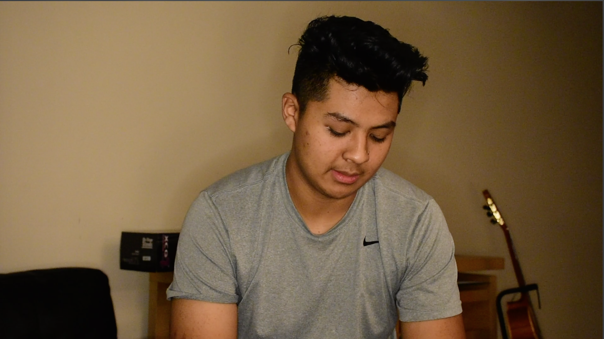
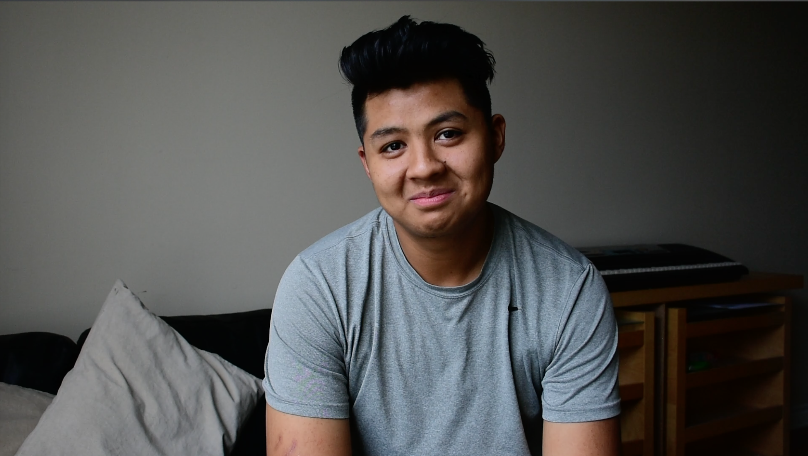
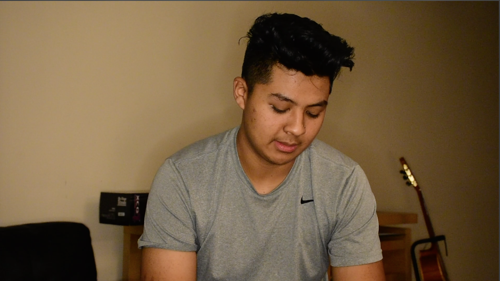
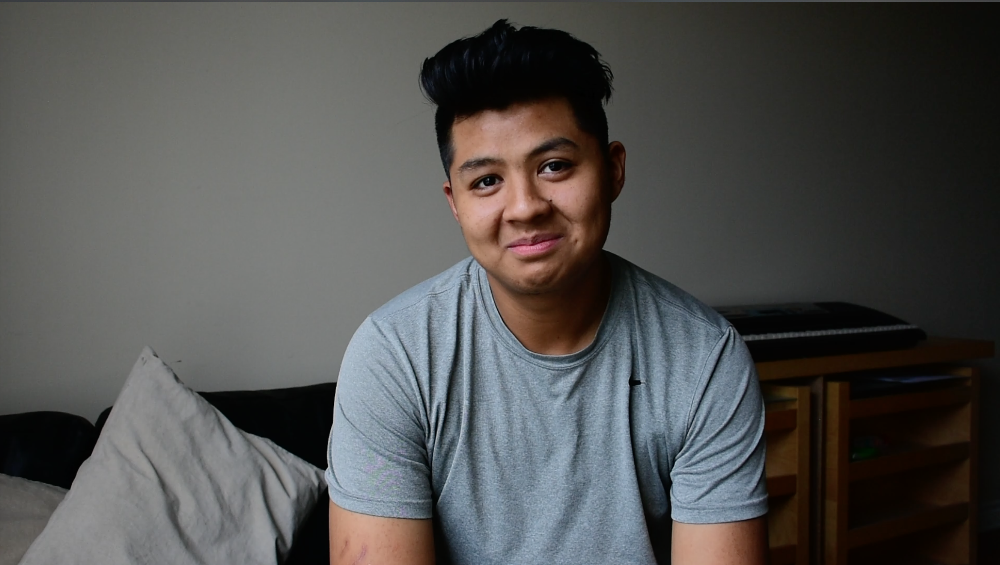

Alone
pre-production | storyboard and concept
I came up with the idea of narrating my experience with the pandemic by documenting how I dealt with the tragic loss of my great grandmother back home and not being able to say goodbye to her. I thought that I could tell this story through my cousin by interviewing him and documenting both of our experiences in one narrative. I roughly had an idea of how the story would unfold and crafted a storyboard that would illustrate my intentions for this project. The first iteration of the storyboard had a bit of a direction but was missing an ending. With the story revolving primarily on an interview, I had to get my cousin’s view on his experience which helped me to come up with a better and concise storyboard.
production | shooting
With my cousin sharing the same household, I was the one able to conduct and film the interview. The filming stage took place on 2 different days as our rough cut footage had to be improved. With the COVID-19 restrictions, we had no access to decent equipment which gave me the opportunity to buy my own tripod. It was challenging to find decent light in the apartment which is also why we had to reshoot the interview during daylight. I improved my framing, mise-en-scene and shooting skills with acquired knowledge on how to get better slow motions by filming in 60fps.
 



post-production | adobe Premiere Pro
Having only been involved in post-production and production stages of projects before, I acquired new skills and knowledge in the post-production stage especially in Adobe Premiere Pro. The editing stage was the most challenging for me even if my storyboard helped a little bit, it was hard to assemble the footage in the most meaningful way, always telling to myself that this scene or that moment does not look good enough or as expected. Moreover, some footage were out of focus or had a lot of noise which led me to watch tutorials on how to fix those, with the video quality being hindered. I had the idea to record interviews by using earphones microphones hidden in the subject’s shirt to get better quality audio, which was really helpful in the sound design stage. It made the process smoother as I only had to adjust the volumes of the footage to make it consistent.